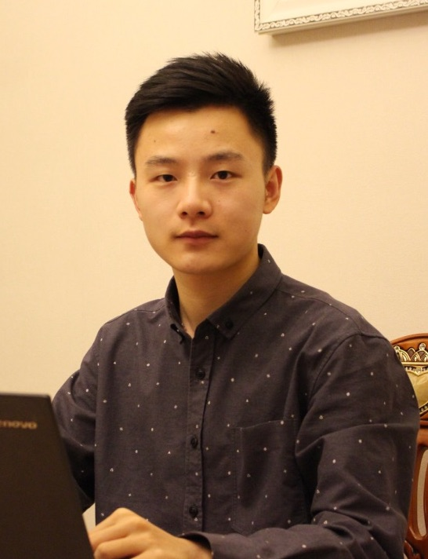

|  | Baotong LuPh.D Student |
I'm a Ph.D student at the Department of Computer Science and Engineering, The Chinese University of Hong Kong (advisor: Prof. Eric Lo). I am also a visiting Ph.D. student at the Data Science Research Group, Simon Fraser University (host advisor: Prof. Tianzheng Wang). I earned my bachelor's degree from Shandong Univerisity in 2018 with Outstanding Graduate award.
My research interest lies on database management system, specifically next-generation database system on persistent memory and multicore processor.
Baotong Lu, Xiangpeng Hao, Tianzheng Wang, Eric Lo, "Dash: Scalable Hashing on Persistent Memory", (to appear) 45th International Conference on Very Large Data Bases (VLDB 2020).
Pengfei Zhang, Eric Lo, Baotong Lu, "High Performance Depthwise and Pointwise Convolutions on Mobile Devices", 34th AAAI conference on Artificial Intelligence (AAAI 2020).
Fall 2019, CSCI4160: Distributed and Parallel Computing
Spring 2019, ESTR3102: Operating Systems (Elite Stream)
Fall 2018, CSCI3150: Operating Systems
| Mitacs Globalink Research Award | 2020 |
| China National Scholarship | 2015, 2017 |